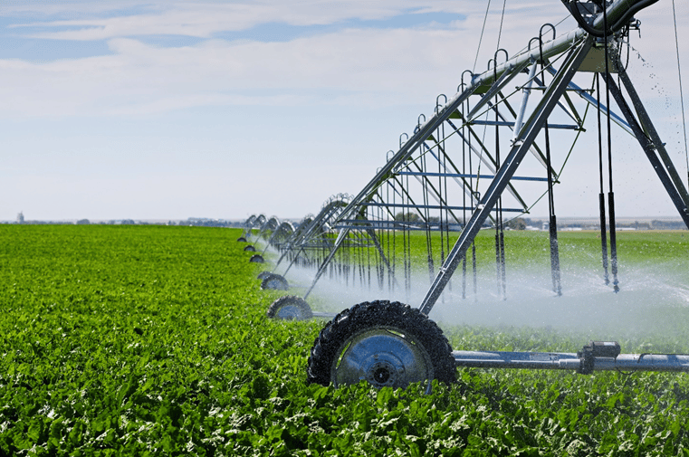
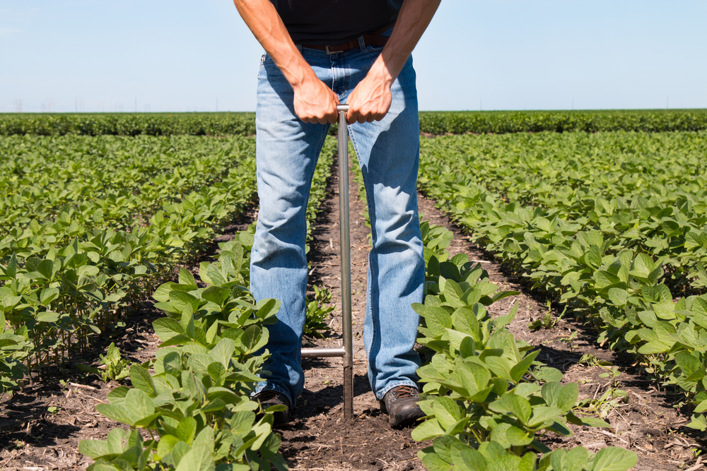
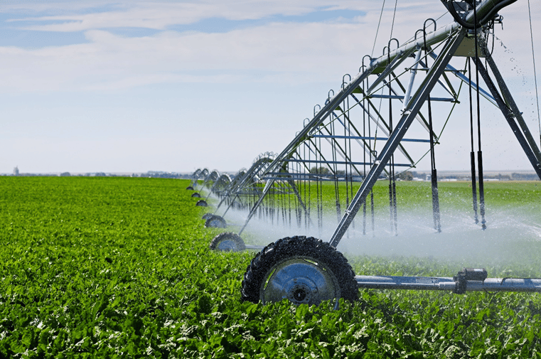
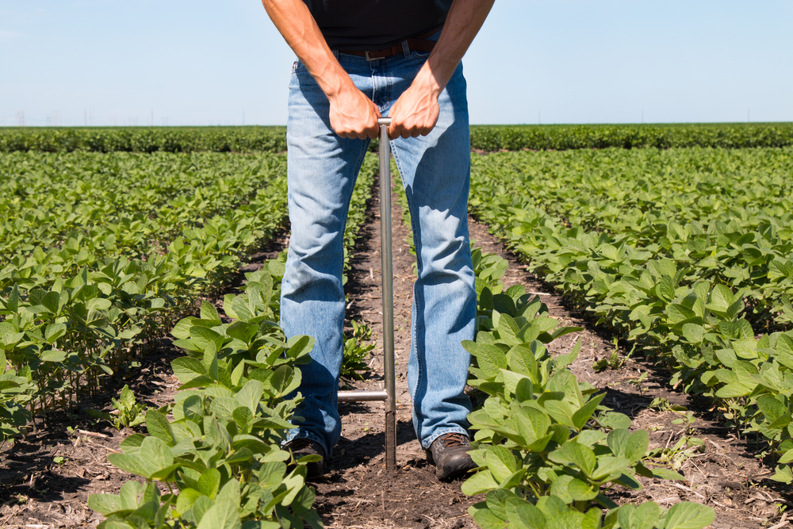

Modern Farming Tips
Farming is both a science and an art. By applying modern farming techniques, you can increase your yield, improve soil health, and ensure sustainable agriculture. Here are some tips that every farmer should consider for improving productivity and making farming more efficient:
- Practice crop rotation to maintain soil fertility and reduce the risk of pests and diseases.
- Use certified seeds and quality organic fertilizers for better growth and high yields.
- Implement efficient irrigation methods, such as drip irrigation, to conserve water.
- Test soil regularly to understand its nutrient requirements and use appropriate fertilizers.
- Adopt integrated pest management (IPM) to reduce reliance on chemical pesticides.
- Use technology like mobile apps and sensors to track crop health and weather conditions.
 


